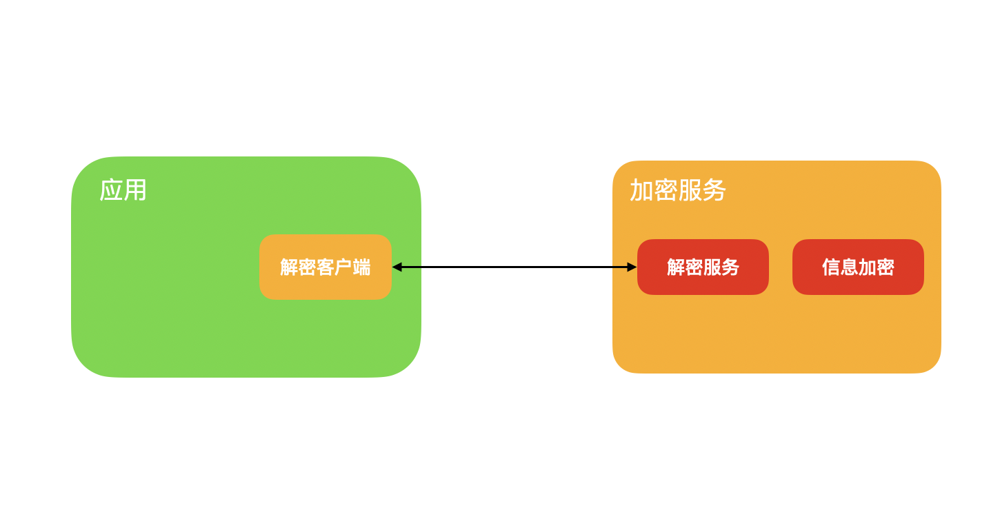

如何隐藏你的数据库密码
当一个服务要上线的时候，配置文件中总会写满各种配置信息，其中有很多的敏感信息，比如数据库的账号和密码，依赖外部服务的 appid 和 secret。
从安全的角度考虑，这些信息肯定都不能用明文的形式展现出来，不应该暴露给开发人员，毕竟这年头，删库跑路，偷数据的人不算少数，另外更严重的是一旦服务器被黑，这些敏感信息也都被泄漏了。
所以要想办法将这些信息隐藏起来，但同时不能影响服务的正常运行。
最好的方式就是将这些信息加密，在系统需要用到这些信息的时候再解密。整体的设计思路如图：

在实现这个思路的过程中，有几个问题需要解决：
- 怎么加密
- 加密后的信息怎么存储
- 在什么时间以及怎么解密
首先加密算法要使用可解密的，根据自己的需求进行选择就可以，比如 Base64，如果对加密的要求比较高，就可以使用 RSA 进行加密，但不管选择哪种加密方式，私钥要保存好。
加密后的信息需要用键值对的形式存储在数据库中，键值对的形式如下：
user_database_username: YXNkZmFkZmFmc2RmYXNmZg==
存储的数据库可以根据具体的情况进行选择，需要能持久化数据的数据库，比如 MySQL。
然后应用在使用账号密码或者其他敏感信息的时候，只需要在配置文件中配置好加密信息对应的 key。
然后每次服务启动的时候，都先去加载这些配置文件，完成对加密信息的解密，然后才开始去初始化系统。
解密的时候通过调用接口的形式来解密，之所以通过接口，是因为解密的密钥不能放在应用服务器上。
这个接口可以通过 Http 接口，也可以通过 RPC 接口，可以根据具体的情况来确定。虽然每个框架的实现不一样，但是原理总是类似的。
找到每个框架启动时候用于加载配置文件的流程，然后对这个流程中的某个节点做一点修改，就可以完成对加密配置的解密。
以 Spring 框架为例，来实现这个解密过程，只需要继承 PropertyPlaceholderConfigurer 类，重写其中的 convertProperties 方法，将加密的信息通过解密接口解密，将解密后的值重新赋值给这些配置，整个过程就完成了。
public class CustomerPropertyPlaceholderConfigurer extends PropertyPlaceholderConfigurer {
private static final Logger logger = LoggerFactory.getLogger(CustomerPropertyPlaceholderConfigurer.class);
@Override
protected void convertProperties(Properties props) {
Enumeration propertyNames = props.propertyNames();
while(propertyNames.hasMoreElements()) {
String propertyName = (String)propertyNames.nextElement();
String propertyValue = props.getProperty(propertyName);
String convertedValue = this.convertPropertyValue(propertyValue);
convertedValue = decrypt(convertedValue);
if (!ObjectUtils.nullSafeEquals(propertyValue, convertedValue)) {
logger.info("Decrypt property: {}", propertyName);
props.setProperty(propertyName, convertedValue);
}
}
}
private String decrypt(String encryptValue) {
// 实现具体的解密服务调用
return encryptValue;
}
}
当然这样做了之后，存储密钥的服务器也会存在风险，一个比较好的方式是将存储加密信息和密钥的数据库部署在内网，无法通过外网进行访问。